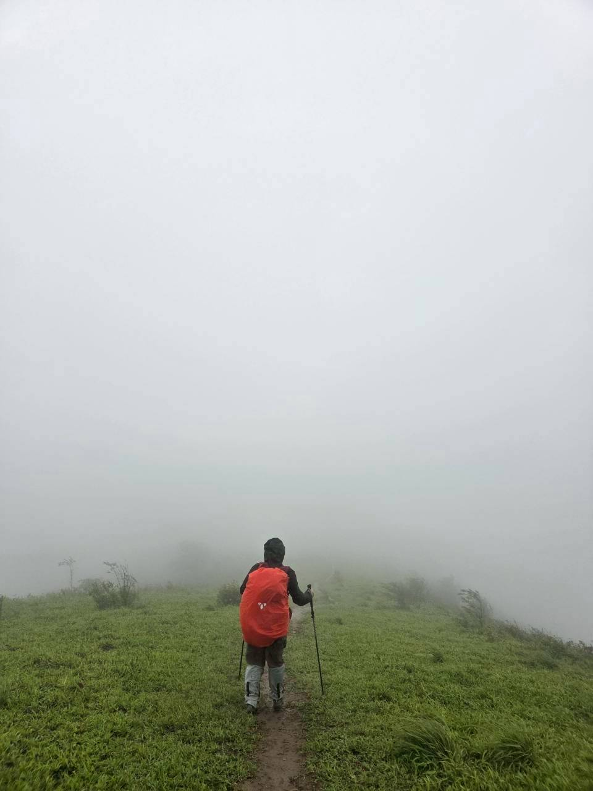
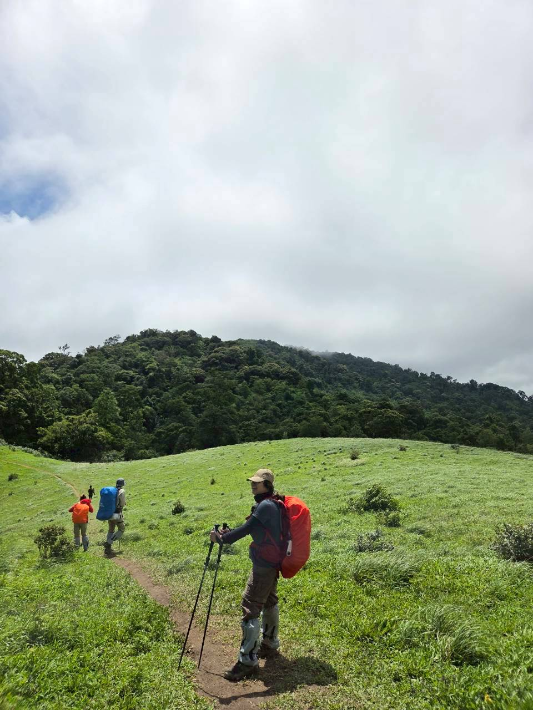
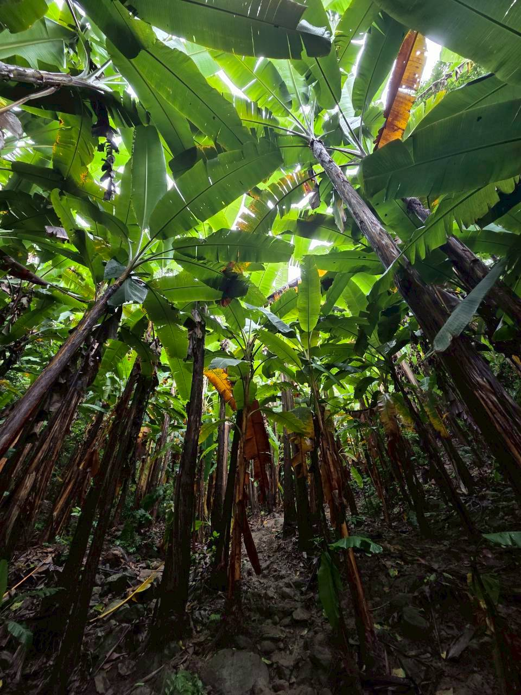
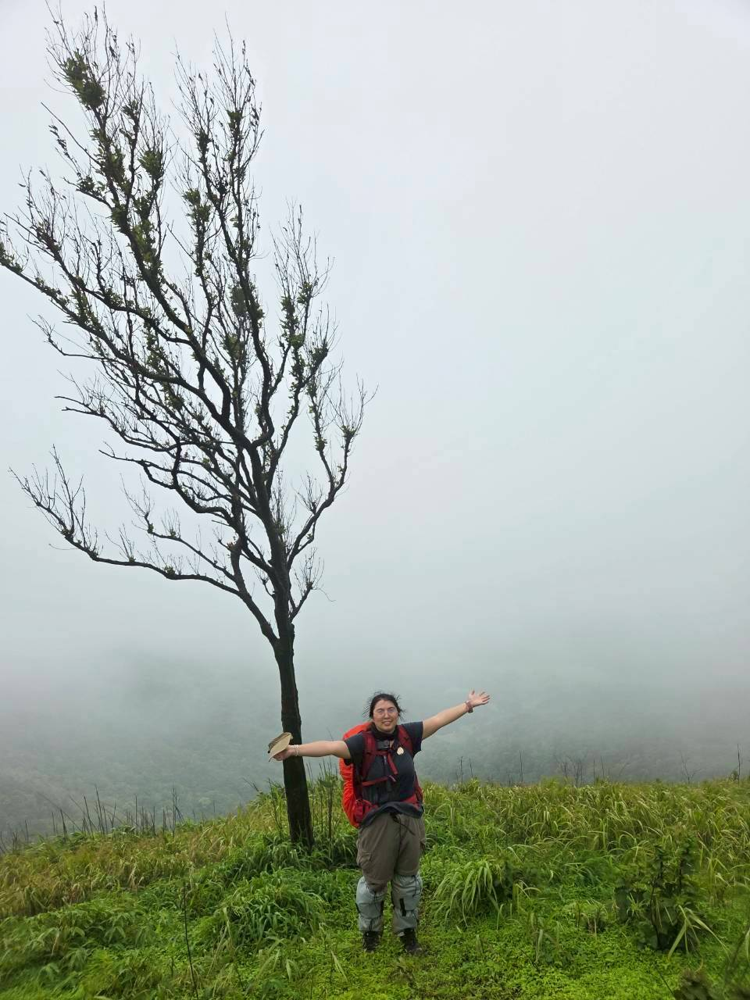
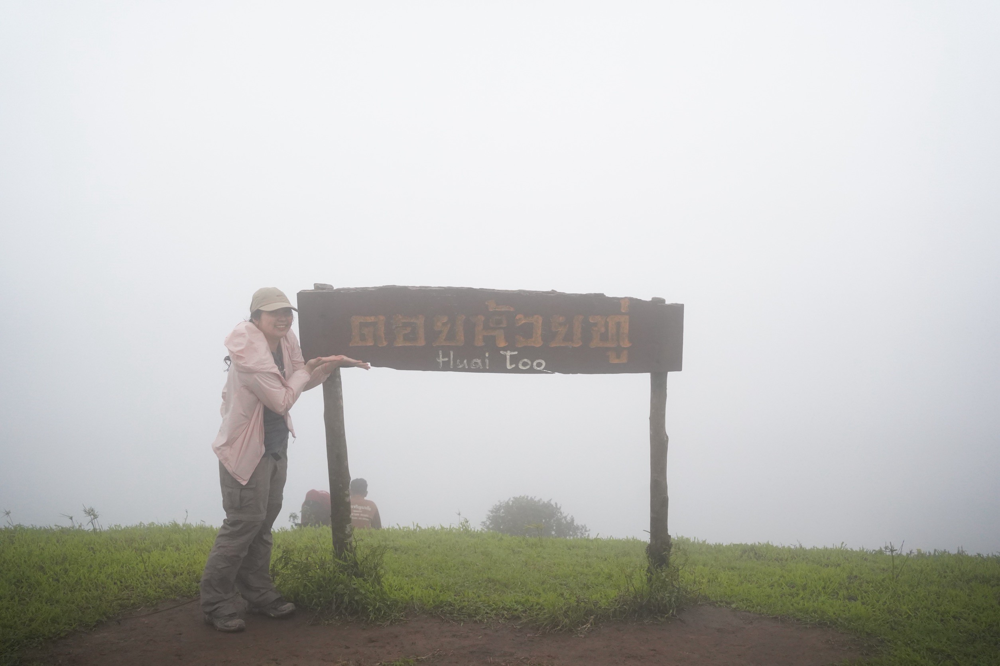
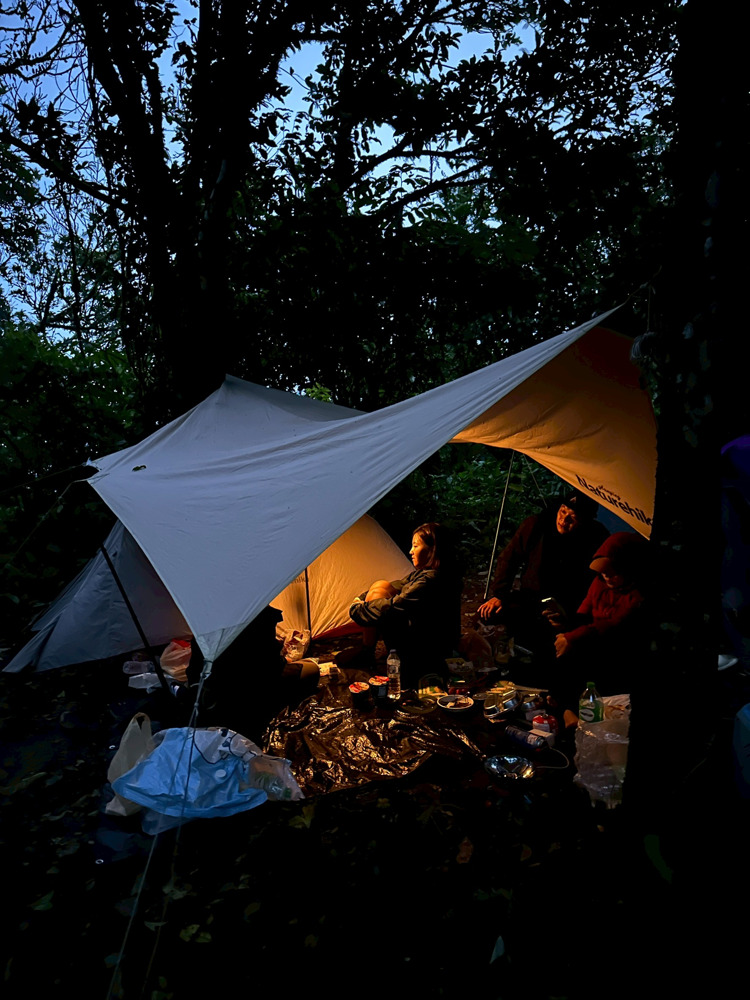
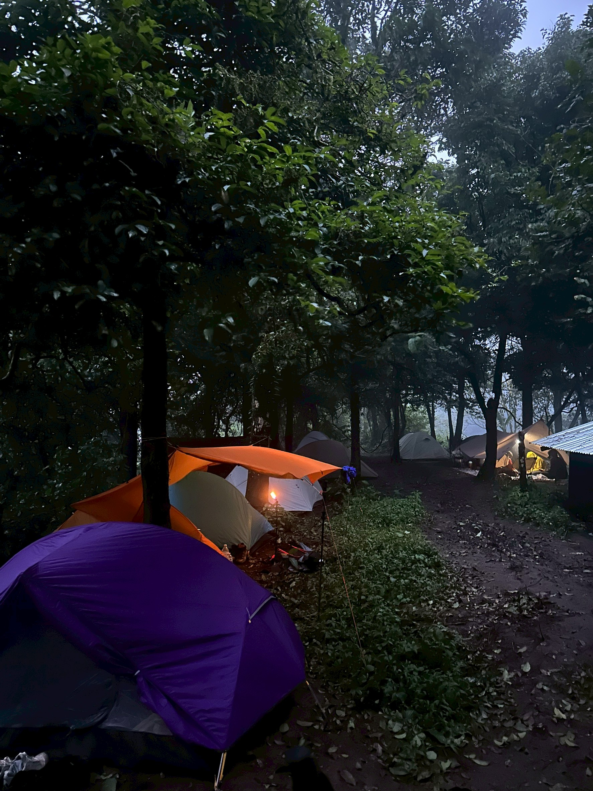
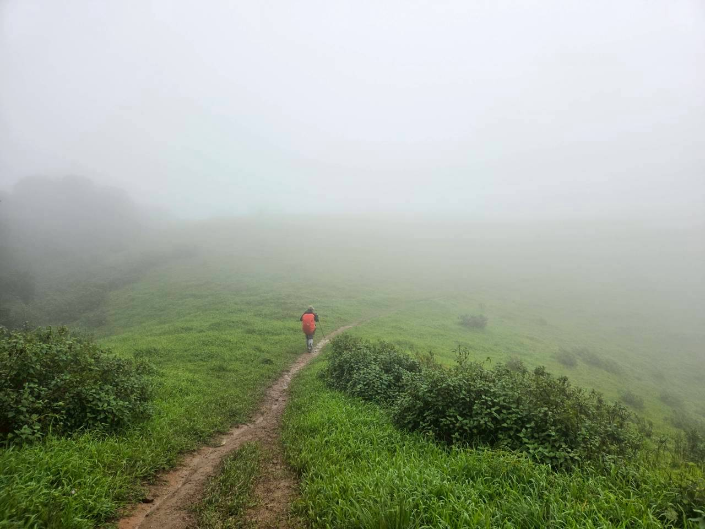

ไม่มีทัวร์ ไม่มีใครพาไปก่อน มีแค่เพื่อน 5 คน กับเป้าหมายเดียวกัน — ดอยห้วยทู่ หน้าฝน ล็อกวันแล้วลุยเลย
Day 0 · เก็บแรงเลิกงานปุ๊บ ออกเดินทางปั๊บ
คืนวันที่ 19 พอเลิกงานก็รีบขับรถจากพิษณุโลกไปนอนพักที่ตาก เก็บแรงไว้ให้เต็มถังก่อนเดินป่าเต็มๆ วันรุ่งขึ้น
Day 1 · เดิน 6 ชั่วโมงทางที่มีเซอร์ไพรส์ทุกโค้ง
เช้าวันที่ 20 มุ่งหน้าคุ้มป๋าต๋อง แบ่งของให้ลูกหาบ ได้ไกด์น้องพลกับ “น้องหมาสนิม” นำทาง แล้วก็ออกเดิน ทางเดินไม่น่าเบื่อเลยสักช่วง — สลับหมอกทึบกับวิวเปิดตลอดทาง:


- 🚻เซเว่น 1 — จุดพักมีห้องน้ำ วิวสวยจนลืมเหนื่อย
- 🌳ป่ากล้วย — ทางชันสลับราบ ลุ้นทุกก้าว
- 🚪เซเว่น 2 — ร้านปิด แต่วิวยังเปิดให้ชม 😂
- 🐱เด่นแมวโพง — จุดถ่ายรูปเด็ดประจำเส้นทาง


ลมแรงขึ้นเรื่อยๆ กว่าจะถึงแคมป์ก็ 6 ชั่วโมงเต็ม กางเต็นท์เสร็จรีบขึ้นไปดูพระอาทิตย์ตก… แต่ฝนมาแทน เจอแค่หมอกขาวโพลน
“ไม่เจอพระอาทิตย์ตก แต่ได้ถ่ายรูปคู่ป้ายไว้เป็นที่ระลึก ก็ยังดี”

มื้อเย็นสไตล์นักเดินป่า มาม่า + ไข่ต้ม ของกินไล่เบาสุด แต่อร่อยขึ้นเยอะเพราะมีข้าวจากรุ่นพี่มาเสริม คุยเล่นกันจนถึง 2 ทุ่มค่อยแยกย้ายเข้านอน


สถิติที่ไม่คาดคิด: ลงใน 3 ชั่วโมงครึ่ง
6 โมงครึ่งตื่นตามนัด กาแฟ + มาม่า + ไข่ต้มอีกรอบ เก็บของให้ลูกหาบแล้วเดินลง คืนก่อนฝนตกทำให้ทางกลับหมอกหนาและลื่นกว่าขามา แถมลมแรงจนพัด rain cover ปลิวหาย — แต่ปลิวทีไรก็เป็นของบุ๋มทุกที ของแท้ต้องคนนี้ 😂 เพื่อนๆ ช่วยกันตามเก็บกันวุ่น 555

สรุปลงเร็วกว่าที่คิดมาก ใช้เวลาแค่ 3 ชั่วโมงครึ่ง — และของแถมประจำทริปหน้าฝน บุ๋มโดนทากทักทายไป 2 ตัวถ้วน 🩸